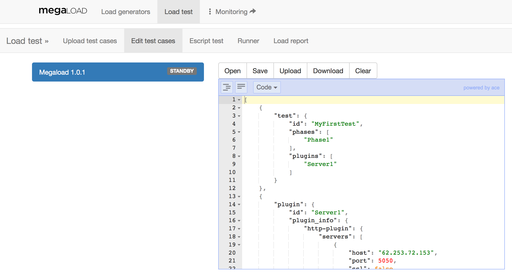
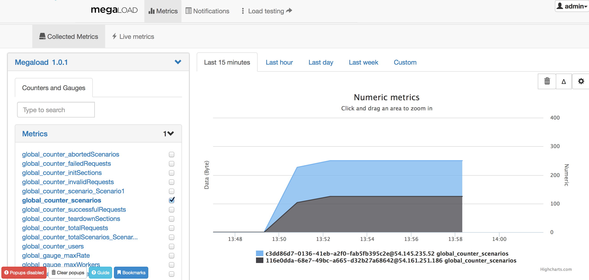
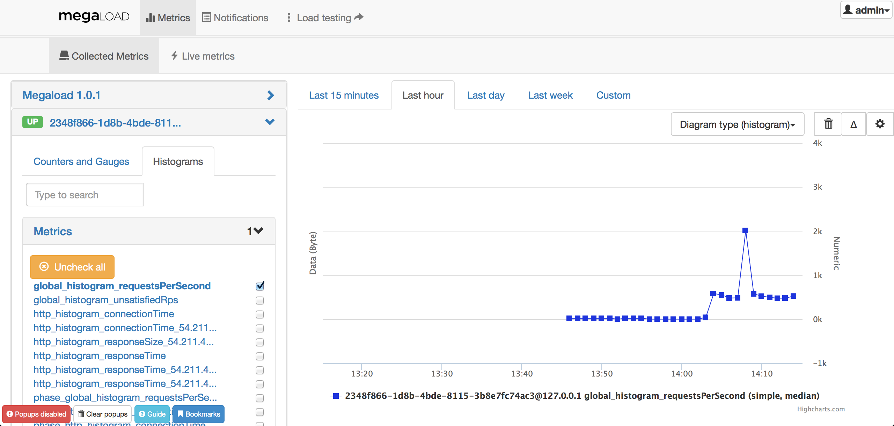

Purchasing and accessing Megaload
To get started with Megaload, you must first purchase Megaload in the Amazon Web Services Marketplace.
- Go to the AWS Marketplace and search for "Megaload".
- Select "Megaload Load Testing" from the search results.
- Review the information on Megaload Load Testing page, and then click Continue.
Follow the steps in Amazon to complete the purchase.
The Megaload instance contains all components ready to use. To start using Megaload:
- Launch MegaloadUI via 1-click.
- Access the application via your web browser at
http://<EC2_Instance_Public_DNS>:8080/index.html.
- Log in using the username “admin” and the instance_id of the instance without '-' as the password.
Getting started with Megaload
Writing a Megaload test
Megaload supports two types of test specifications for load testing. Tests for HTTP interfaces can be written in JSON, while tests for XMPP are written in plain Erlang. To get you started with the tests, look at the following HTTP example:
[{"test" : {"id" : "MyFirstTest",
"phases" : ["Phase1"],
"plugins" : ["Server1"]
}},
{"plugin" : {"id" : "Server1",
"plugin_info" : {"http-plugin" : {"servers" : [{"host" : "10.100.0.120",
"port" : 5050,
"ssl" : false}
],
"stats_per_url" : true
}}
}},
{"phase" : {"id" : "Phase1",
"arrival_rate" : 10,
"duration" : 600000,
"concurrent_scenarios" : 250,
"rate" : 500,
"scenarios" : [{"Scenario1" : 1}]}},
{"scenario" : {"id" : "Scenario1",
"keepalive" : true,
"actions" : [ {"http-request" : {"plugin_id" : "Server1",
"method" : "GET",
"path" : "/index.html"
}
}]}}
]
In this test case:
- duration runs for 10 minutes (600000 milliseconds)
- arrival_rate starts 10 new users per second, up to 250 concurrent users
- rate generates 500 requests per second
- keepalive users stay connected to the HTTP server and repeat the same http-request GET "/index.html" for the duration of the phase
Dashboard
There are two main dashboards for controlling Megaload:
- Load testing provides all the facilities to edit, upload and execute test cases
- Monitoring provides real-time metrics of the system
To access the Load testing dashboard, go to http://<EC2_Instance_Public_DNS>:8080/megaload/index.html. The primary navigation bar provides two main menus, Load generators and Load test.
The Load generators page shows the Megaload instances that have been deployed. In the following example there is one Megaload generator Megaload 1.0.1, which consists of one load engine (Megaload node).

The next sections explain step by step how to use the Load test functionality to write, upload and execute load test.
Editing JSON tests
The Edit test cases tab provides a JSON test editor that does basic syntactic checks to help you write test specifications. To view the editor, first select the Megaload generator on the left. This will show the editor on the right, containing the test specification that is currently loaded.

Note that using the editor is not obligatory. You can write your tests in any text editor of your choice, and then upload the files directly to Megaload. If you need to do further editing, you can open your files in the editor and make changes there.
Try to edit the previous example by replacing the server in the http-plugin object with a server you want to test. You may also amend the path of the http-request.
Loading a JSON test
The Load test page provides all the functionality required to upload and run tests.
To upload a test specification:
- Click the Upload test cases tab.
- Click the load generator on the left. This shows the upload menu on the right.
- Click Add files and select the files to upload.
- Click Start upload or Start to upload the individual files.
The status shows as Uploaded or, if the test specification is invalid, Error. If an error occurs, a pop-up window will show the reason.

Running a test
The Runner tab provides the controls to start and stop a test.
To run a test:
- Click the load generator on the left. This shows the test control menu on the right.
- Select the test identifier from the drop-down list next to the Start button.
- Click Start.
The following screenshot shows a test that has been started:

Viewing test results
The Load report tab provides a summary of the test being executed. The Load report consists of six tabs with additional information, the main ones are:
-
Status shows the current status of the test, which can be one of the following: Running, Finished or Stopped. The status Stopped is shown when the user clicks on Stop in the Runner tab.
-
Response time shows a statistical report about the response time of the current protocol (selected using the drop-down buttons) in the selected load engine. At the bottom of the page, there is a table with the response time per URL requested. Statistics will show up approximately one minute after test start.

-
Rate shows a statistical report about the rate of requests in the selected load engine.

-
Statistics provides a direct link to the full metrics dashboard, also accessible from the Monitoring link at the top of the page.
Real-time metrics
The Monitoring dashboard provides all the real-time metrics under http://<EC2_Instance_Public_DNS>:8080/#/metrics.
The Collected Metrics tab displays the load generator and its load engines on the left.

-
The load generator, Megaload 1.0.1 aggregates the counters from all the load engines, displaying metrics such as the number of scenarios or sucessful requests for the whole system. Click the name to display the drop-down menu with the full list of available metrics. For example, select global_counter_scenarios and check the concurrent users. The next images shows a custom deployment with two load engines.
 -
Below the load generator are all the load engines that have been deployed. Select one of them to display the drop-down menu containing counters and histograms. For example, select Counters and Gauges and check the concurrent users for that node.

-
Histograms provide information about response times, connection times or requests per second on each of the individual load engines. All these measurements and their units are described in detail in the Counters section. 